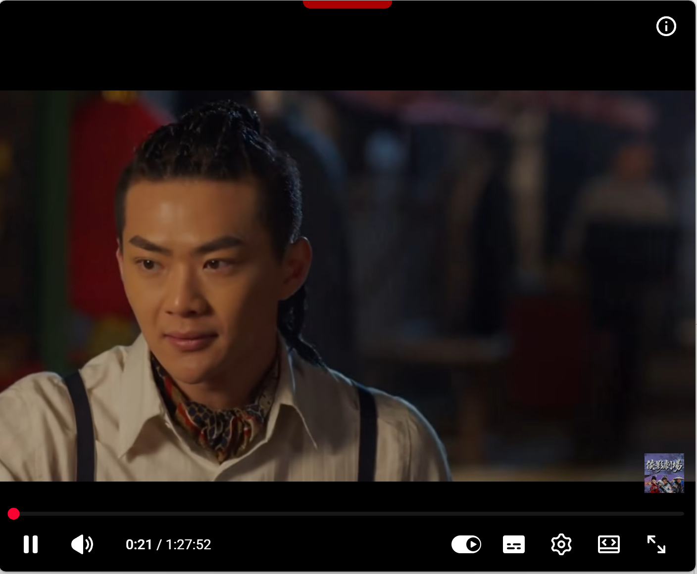
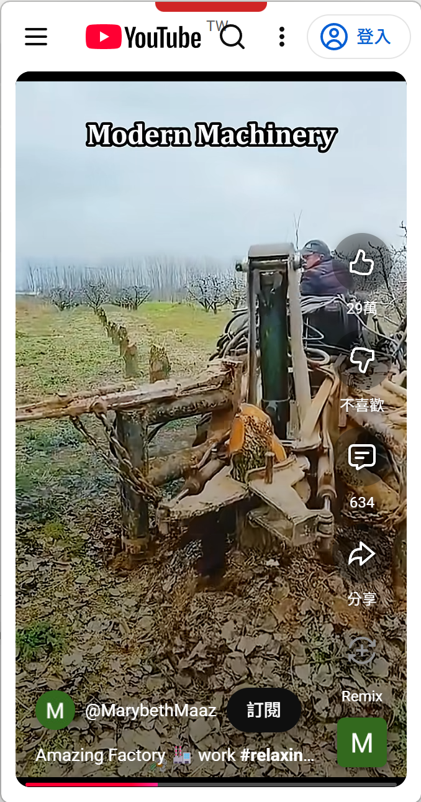
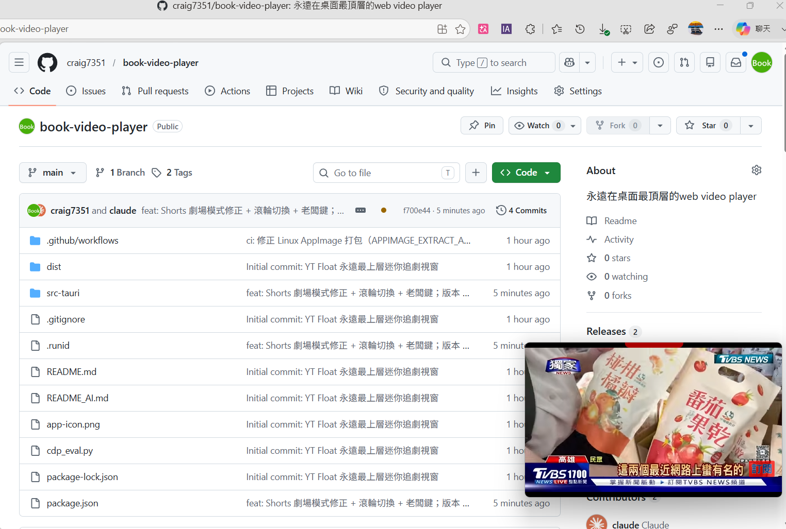

極省資源、免安裝的迷你浮動視窗，永遠最上層。
把 YouTube / Netflix / Bilibili 縮到螢幕角落，工作追劇兩不誤。
為了「邊工作邊看」這件事，把每個惱人的小痛點都解掉。
單一執行檔點兩下就開，共用系統內建瀏覽器引擎，不像 Electron 要塞一整套 Chromium，記憶體佔用低、放著看也不卡。
拖到螢幕右下角，蓋在 Excel、IDE、瀏覽器之上，再也不用一直切視窗找你的影片。
按 Ctrl+Shift+Z，視窗瞬間消失、影片同步暫停（聲音也停，不穿幫），老闆走掉再按一下就回來。
一鍵隱藏標題、推薦、留言，播放器填滿整個小視窗。支援 YouTube 一般影片與 Shorts。
YouTube / Netflix / Bilibili 一鍵跳轉，並攔截「開新分頁」連結改在同視窗開啟（修正 Bilibili 點影片沒反應）。
無邊框設計，紅色握把拖曳移動、四邊四角縮放，網址列平常自動隱藏，畫面乾淨。
小巧、乾淨、不擋路。



Windows 推薦免安裝版，下載點兩下就開。
🪟 Windows 免安裝版（portable） 🪟 Windows 安裝版（.exe / .msi） 🍎 macOS（.dmg） 🐧 Linux（.AppImage / .deb / .rpm） 免安裝版下載後雙擊即可執行。Windows 11 內建 WebView2 Runtime；Windows 10 若無可至微軟官網安裝。不用設定，開了就能用。
下載的檔案來自公開原始碼的自動建置，相對安心。
所有 Release 安裝檔都由 GitHub Actions 直接從本 repo 的開源原始碼自動編譯並上傳，沒有任何人從自己電腦手動打包的步驟。原始碼與每一次的完整建置紀錄都公開可稽核，因此你下載的檔案內容對應的就是公開的程式碼，相對能放心不會被夾帶病毒或後門。
註：自動建置能大幅降低「被偷塞惡意程式」的風險，但無法 100% 保證絕對安全；不放心可自行 clone 原始碼用 npm run tauri build 編譯。
建置腳本 · 建置紀錄 (Actions) · 原始碼